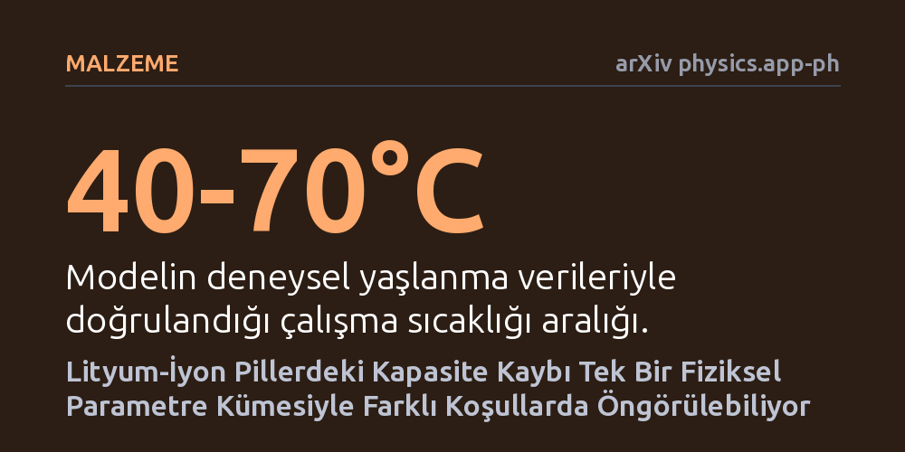

MALZEME · arXiv physics.app-ph · 2026-10-23
Araştırmacılar, lityum-iyon pillerdeki kapasite kaybının ana nedeni olan katı-elektrolit tabakası büyümesini elektron yayılımına dayalı fiziksel bir modelle inceledi. Geliştirilen model, her deney için yeniden ayar gerektirmeyen tek bir parametre kümesiyle farklı sıcaklık, şarj hızı ve bileşimlerdeki pil yaşlanmasını tutarlı biçimde öngördü.
Farklı koşullarda çalışan lityum pillerin ömrünü tahmin etmek için her seferinde aylar süren yeni testler yapmak yerine, tek bir fiziksel modelle uzun vadeli yaşlanma güvenilir şekilde hesaplanabilir.

Akıllı telefonlardan elektrikli araçlara kadar modern teknolojinin bel kemiğini oluşturan lityum-iyon piller, kullanıldıkça ve zaman geçtikçe kaçınılmaz olarak kapasite kaybeder. Bu performans kaybının arkasındaki en baskın etkenlerden biri, pilin eksi kutbunda (anotta) elektrolit sıvısı ile elektrot arasında kendiliğinden oluşan ve katı-elektrolit arayüzü olarak adlandırılan ince koruyucu tabakanın zamanla kontrolsüz biçimde kalınlaşmasıdır. Bu tabaka büyüdükçe pildeki aktif lityum iyonlarını tüketir ve pilin depolayabileceği enerji miktarını kalıcı olarak azaltır.
Pil üreticileri ve mühendisler için en büyük zorluk, bu yaşlanma sürecini önceden doğru biçimde hesaplayabilmektir. Çünkü bir pilin ne kadar dayanacağı yalnızca geçen zamana değil; maruz kaldığı sıcaklığa, ne kadar hızlı şarj edildiğine, hangi şarj aralığında kullanıldığına ve kullanılan kimyasal malzemelere göre büyük değişkenlik gösterir. Bugüne kadar geliştirilen birçok model, yalnızca belirli bir deney koşulu için geçerli kalmış ve çalışma şartları biraz değiştiğinde baştan ayarlanması gereken karmaşık katsayılara ihtiyaç duymuştur.
Araştırmacılar, bu sorunu aşmak için deneysel verilere uydurulan ampirik formüller yerine doğrudan temel fizik kurallarına dayanan bir model geliştirdi. Modelin merkezine elektron difüzyonu mekanizması yerleştirildi. Buna göre, anottan elektrolite doğru sızan elektronların hızı ve yoğunluğu, arayüz tabakasının büyüme hızını doğrudan belirler. Pilin şarj seviyesi yükseldikçe anot gerilimi değişir ve bu durum serbest elektron yoğunluğunu artırarak tabakanın daha hızlı büyümesine yol açar.
Geliştirilen bu kuramsal çerçeve, lityum demir fosfat ve grafit (LFP/grafit) kimyasına sahip pillerin laboratuvar ortamındaki gerçek yaşlanma verileriyle kapsamlı bir sınamadan geçirildi. Model; 40 ile 70 santigrat derece arasındaki farklı sıcaklıklarda, yirmi saatte bir tam şarjdan (C/20) bir saatte tam şarja (1C) kadar değişen akım hızlarında, iki farklı elektrolit tuzunda (LiFSI ve LiPF6) ve iki farklı yapay grafit türünde ayrı ayrı test edildi.
Çalışmanın en dikkat çekici sonucu, tüm bu farklı sıcaklıklar, şarj hızları ve malzeme çeşitleri için model parametrelerinin hiçbirinde değişiklik yapılmaması oldu. Araştırmacılar, tek bir tutarlı parametre kümesini hiç değiştirmeden uyguladıklarında dahi pillerin kapasite kaybı eğrilerini yüksek doğrulukla simüle etmeyi başardılar. Bu durum, elektron yayılımı mekanizmasının pil yaşlanmasındaki temel fiziksel etkeni gerçekten yakaladığını gösteriyor.
Elde edilen bulgular, pilin şarj seviyesinin bozulma hızı üzerindeki doğrudan etkisini de netleştirdi. Pili tam dolu tutmak yerine daha dar ve düşük şarj pencerelerinde çalıştırmanın arayüz tabakasının kalınlaşmasını belirgin biçimde yavaşlattığı doğrulandı. Ancak model, pillerin yüksek şarj seviyesinde bekletildiği uzun depolama sürelerinde kapasite kaybını gerçekte ölçülenden biraz daha yüksek hesapladı; yine de genel eğilimi doğru yansıtmayı sürdürdü.
Bu çalışma, elektrikli araçlar ve enerji depolama sistemleri için pil yönetim yazılımlarının geliştirilmesinde önemli bir adım teşkil ediyor. Her yeni pil hücresi veya kullanım senaryosu için aylar süren yıpratma testleri yapmak yerine, temel fizik mekanizmasını yansıtan bu tür modeller sayesinde pillerin ömrü çok daha kısa sürede ve güvenilir biçimde öngörülebilir.
Günlük kullanıcı açısından ise çalışma, pillerin sağlığını korumaya yönelik temel bir kuralın fiziksel temelini pekiştiriyor: Lityum-iyon pilleri sürekli yüzde 100 şarjda tutmamak ve cihazları aşırı sıcak ortamlardan korumak, iç yapıdaki elektron sızıntısını ve buna bağlı geri döndürülemez lityum kaybını doğrudan frenliyor. Yine de araştırmanın henüz hakem onayından geçmemiş bir önbaskı olduğu ve yüksek şarjdaki hesaplama sapmalarının giderilmesi gerektiği unutulmamalıdır.